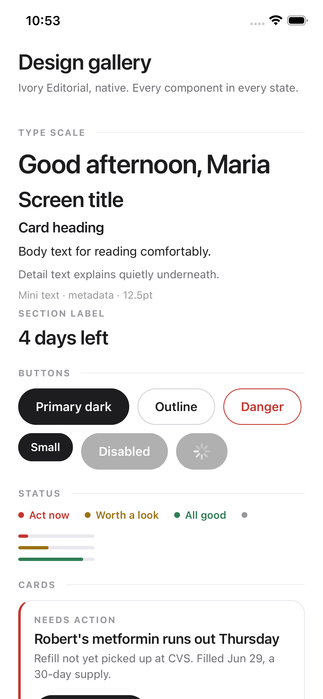
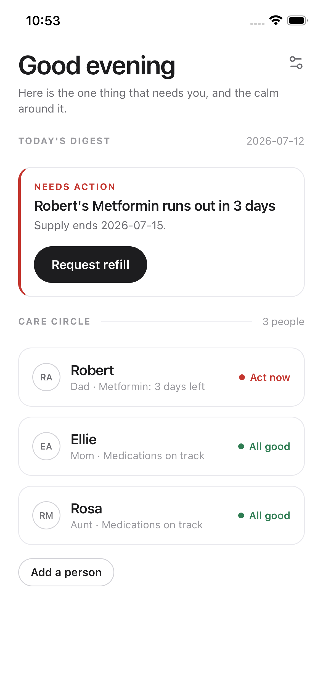
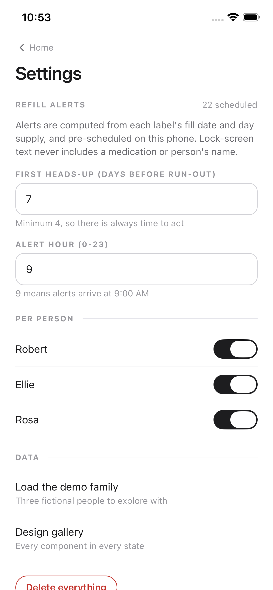
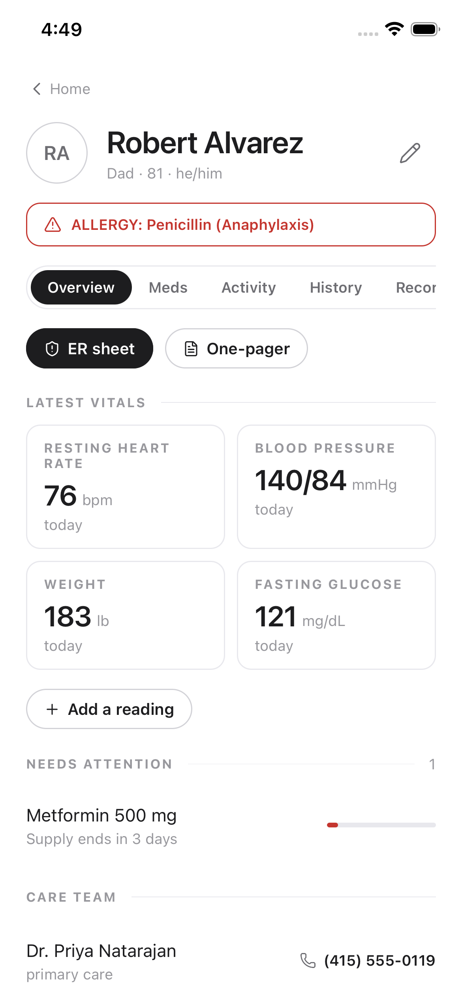
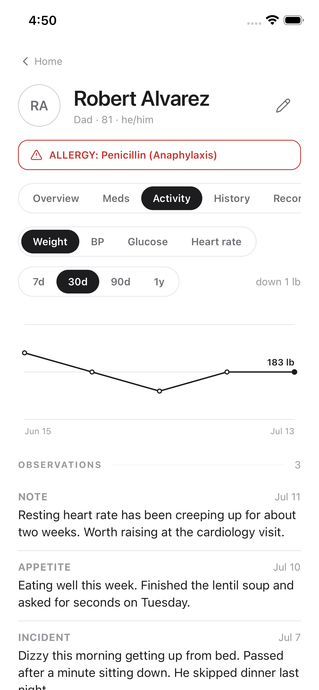
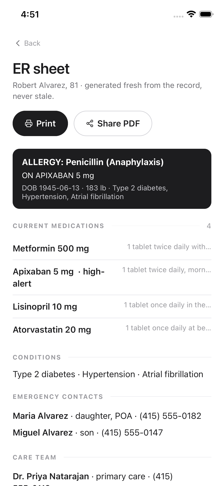
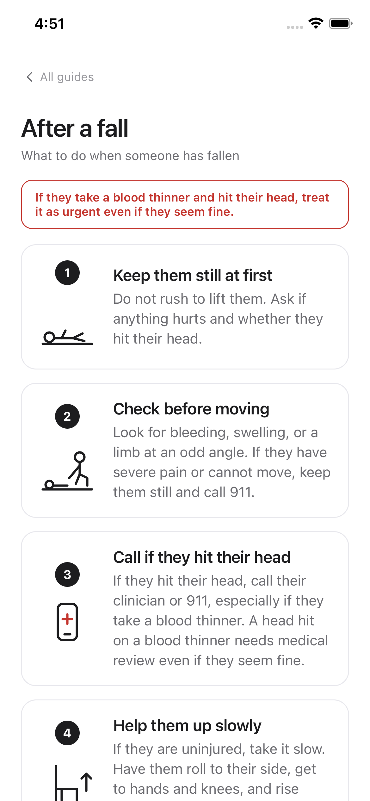
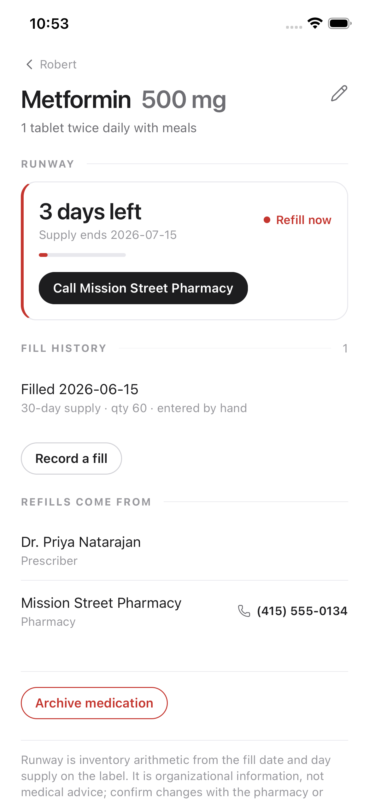
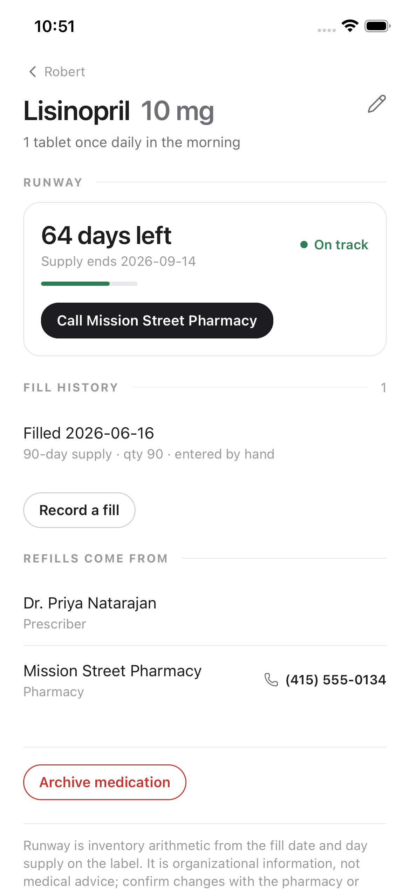

The real app, built phase by phase.
RUA is becoming a native iPhone app. This page explains the build in plain English, with sketches: the encrypted foundation, the lovable core, the full patient record with its paper layer, the hardening pass, and now Stages 5 and 6 — the scan-a-label pipeline, the appointment kit, and the admin-workflow engine (a node-and-edge automation system where every document passes a human confirmation gate). Every push runs 290 unit tests plus 14 browser end-to-end journeys in CI.
How a bottle becomes a calm morning
Everything in RUA flows from two facts printed on every prescription label: the fill date and the day supply. A human verifies them once; deterministic code does everything else. No AI touches a number, and nothing leaves the phone.
Before features: prove the scary parts
Four things could invalidate the whole architecture later: losing someone's data, an ugly design language, OCR not being good enough, and the legal reality of holding another person's health information. Stage 1 retired all four.
The encrypted vault & the durability gate
4 days · committedEverything a caregiver will ever type lives in one SQLite database on the phone, encrypted with a key that never leaves the iOS Keychain. Before a single feature existed, this phase had to prove data survives crashes, upgrades, and even failed upgrades.
- pnpm monorepo: the app, a pure-code engine package, a schema package — the engine can never secretly depend on UI
- SQLCipher encryption: 256-bit key generated on first launch, stored only in the Keychain; the database file is unreadable without it
- Copy-restore migrations: before any upgrade, the database is snapshotted; a failed upgrade restores it automatically
- Every table carries UUIDv7 ids, UTC timestamps, and an append-only change log — the groundwork sync will use in Stage 7
- Boot recovery screens for the two nightmare states (key lost, file lost) instead of a crash loop
Ivory Editorial, native
3 days · committedThe exact design language you approved on the web — pure white, hairline rules, editorial type, black pill buttons, color only as tiny status dots — rebuilt as native components. Every later screen is composed from this kit, so drift is impossible.
- Design tokens: paper/ink palette, spacing, radii, a true half-pixel hairline, the editorial type scale
- 14 components: Screen, SectionHeader, Card, ListRow, PillButton, StatusDot, RunwayBar, FormField, CheckRow, EmptyState, DisclaimerFootnote and more
- Lucide line icons only — a lint rule bans emoji from UI strings
- A living gallery screen showing every component in every state, compared side by side with the web MVP

Can a phone read a pill bottle? GO
3 days · committedBefore committing to the scan-a-label flow (Phase 21), we proved it. Forty realistic pharmacy labels — four layout families, rotations, glare, stickers covering fields, small type — were run through Apple's Vision OCR (the same engine iPhones use) and a deterministic parser, scored field by field against ground truth.
| Field | Clean labels | All 40 labels | What failures looked like |
|---|---|---|---|
| Drug name | 100% | 100% | none |
| Fill date | 100% | 100% | decoy dates never captured |
| Day supply | 100% | 85% | stickers physically covering the text → returned as missing, never wrong |
| Sig / schedule | 100% | 100% | two-line sigs rejoined correctly |
| Rx number / phone / refills | 100% | 95–100% | shared-line occlusion only |
Whose data is it? The consent framework
2 days · committedRUA holds health information about someone other than the phone's owner. Before building anything that stores it, this phase fixed the legal posture and wrote the exact words the app ships: the caregiver-authority attestation, the disclaimer set, and the intended-use line every future feature is checked against.
- Legal posture, written down: not a HIPAA covered entity (and never claims it); FTC health-breach rules with a 60-day incident plan; Washington and California consumer-health laws mapped to concrete duties
- The attestation: when you add a person, you confirm you have their permission or authority — saved with a timestamp on their record
- Four disclaimers, verbatim: onboarding, runway screens, emergency guides, and the future assistant
- The intended-use statement: an organizational tool — no dosing, no diagnosis, no triage, ever
- Per-category consent scopes and respite-mode rules, ready for the sharing features in Stage 7
The smallest thing a caregiver would miss if deleted
A care circle with real medication lists, exact refill runways, one calm daily answer, and lock-screen alerts that survive the app being closed. This is the retention loop everything else builds on.
The care circle & medication records
4 days · committedMultiple people, each with a complete record: conditions, allergies with severity, contacts you can call in one tap, and medications with the fill tracking the engine needs. Dangerous medications are flagged the moment you type their name.

- Add and edit people — with the Phase-4 attestation checkbox built into the flow
- The allergy band: severe allergies render in red on every visit to the record
- Medication create/edit with schedule, prescriber, pharmacy, and the last fill (date + day supply)
- A live high-alert gate: typing "apixaban" or "insulin" flags the med instantly and adds one extra deliberate confirmation before saving
- Every write appends to the audit log — nothing changes silently
The runway engine — the deterministic heart
2 days · committedOne sum, done perfectly: the label says filled June 15, 30-day supply, so the supply ends July 15 — full stop. No AI, no adherence guessing, no clock tricks. If there's no fill on record, RUA says so instead of inventing a number.
- runway = fill date + day supply − today, computed in pure code with no access to the system clock
- Statuses live in code: OK → worth a look at 10 days → act now at 3 → overdue at 0
- Med-sync calculator: finds the one pickup day that aligns a whole regimen, with short-fill quantities
- Honesty rules: as-needed meds get no forecast; missing fills get an explicit "add fill" state
Today's Digest — one answer per morning
3 days · committedOpening RUA answers a single question: what is the one thing that needs me today? A ranking — not a feed — funnels every signal across every person into one lead action, with the calm shown quietly underneath. The ranking is code, so "why is this first?" always has an answer.

- The funnel: overdue > urgent > soon > missing-fill > gone-quiet, ties broken by days left, then by high-alert
- Exactly one lead card with its action; at most four quiet lines; a genuine "all good" state
- Care-circle cards roll each person up to Act now / Worth a look / All good
- Recomputes on every write and at day rollover — never a stale morning
Refill alerts that survive a closed app
3 days · committedBecause the runway is arithmetic, every future reminder is knowable the moment a fill is saved — so RUA schedules them all with iOS immediately instead of hoping a background task runs someday. iOS background execution is famously unreliable; RUA simply doesn't depend on it.
- Three alerts per medication — a heads-up (your chosen lead time), an urgent at 3 days, and run-out day — plus a next-morning nudge if it's already overdue
- Write-time reconciliation: every med edit and app-open diffs the desired plan against what iOS actually has pending, canceling and scheduling only the difference
- Quiet hours (even windows that wrap midnight), per-person toggles, and the iOS 64-pending cap handled nearest-first
- Lock-screen privacy by rule and by test: payloads never contain a drug, dose, or name — "A medication needs attention"
- Tapping an alert deep-links straight to the medication it is about

The whole person, and the page you grab on the way out
Stage 3 deepens each elder into a full record — vitals, trends, history, labs, documents — and then makes it travel on paper: the one-pager, the ER sheet, the everyone pack, and six emergency guides. All of it works in airplane mode, because the worst moments happen in places with no signal.
the paper layer: a live record on the left, three always-current documents on the right
Patient 360: tabs for the whole person
12 days · committedThe patient screen became a six-tab record. Overview leads with what matters now (latest readings, meds needing attention, the care team a tap from calling). Activity turns readings into hairline trend charts — the bucketing math lives in the tested core, so the chart can only say what the data says. History is a year-grouped timeline where medication changes appear automatically; nobody writes them twice. Records holds labs with out-of-range flags. Documents is an encrypted vault for insurance cards and directives, fed by the camera.
- Migration 0001: five new tables, applied through the copy-protected migration path from Phase 1 — the durability gate's first real test
- Charts: custom SVG, one mark type, first/last labels only — bucketing (daily / weekly / monthly means) pinned by 9 core tests
- Robert's demo record now tells a story: resting heart rate drifting up for two weeks, the observation that noticed it, and the labs behind it
- Camera and photo permission strings are specific and honest; files live under iOS Data Protection, shares go through the access log

Overview: allergy banner, latest vitals, needs attention

Activity: hairline trends and the observation log

History: year-grouped, med changes auto-appended
Paper: one-pager, ER sheet, everyone pack, guides
8 days · committedPrint is the emergency interface. A pure template package renders US-Letter documents with the severe-allergy band leading every page; the app enforces two rules in one chokepoint — every print or share is logged, and PDFs live only in cache and are deleted after the share sheet closes. The one-pager adds a personalized daily-needs table (protein, fluids, fiber, and the rest) computed from published reference values by deterministic, tested rules — general guidance, framed as exactly that. Six emergency guides ship inside the binary with 24 hand-drawn pictograms: falls, choking, stroke, chest pain, bleeding, sudden confusion.
- Templates are snapshot-tested and escape hostile input (a patient literally named <script> prints harmlessly)
- The ER sheet opens two taps from home; call-first guides carry a red Call 911 pill
- Every guide wears its review stamp on the surface: "Pending clinician review v0.9" until a licensed reviewer signs — honesty over theater
The ER sheet: critical facts above the fold

The guide book: six situations, 911-first banner
After a fall: pictogram steps, blood-thinner warning
Trustworthy is a feature
Before new capabilities, the app earned its keep: accessible to caregivers who use VoiceOver, honest when something breaks, recoverable when a phone is lost, and transparent about every time care data leaves the app.
Shields, backup, and the access log
10 days · committedA privacy shield covers the screen with plain paper the instant RUA leaves the foreground, so the iOS app switcher never shows a medication list. An opt-in Face ID lock guards opening. Backup is the canonical SQLCipher move — the whole record re-keyed to a passphrase you choose, one file, restorable on a new phone — which also answers the deliberate "key loss means data loss" design with an escape hatch you control. And the access log turns a promise into a screen: every print, share, and export, timestamped, append-only.
- Error boundary: no crash ever strands a caregiver on a white screen; data stays put, one tap retries
- Accessibility: roles and labels on every interactive element, 44pt targets, chart alt text; the manual VoiceOver run is on the physical-device list
- Delete-everything wipes the database, its key, the WAL files, and the document vault
- HOSPITAL_BASEMENT.md: the airplane-mode release gate, committed to the repo and run before every release
Running, on a phone, today
These are unedited simulator captures. The demo family is fictional and always live: fill dates are computed relative to today, so Robert's metformin is forever three days from empty — the digest always has a story to tell.


Decisions we'll still be glad about at Phase 32
The full record lives in ARCHITECTURE.md in the repo — fifteen decision records with costs and payoffs. The eight that matter most: